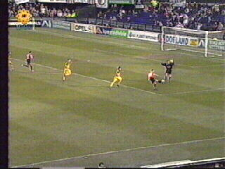
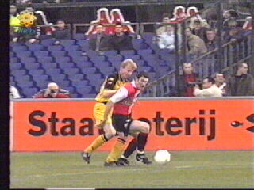
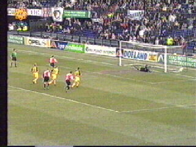
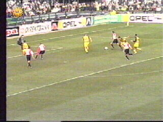
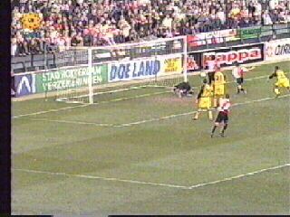
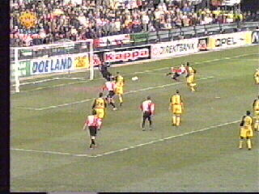

|
Feyenoord - Roda JC (5-0) 3 februari 2002 |

Alweer komt Roda al heel snel op achterstand.
Emerton scoort in de tweede minuut.

Geheel ten onrechte geeft scheidsrechter Luyten
aan Vandenbroeck in deze actie tegen Emerton
de gele kaart en krijgt Feyenoord een penalty!

De verschrikkelijke Van Hooijdonk die nog in
elke ontmoeting met Roda scoorde, verzilvert
het cadeau in de derde minuut.

Na een aantal goede kansen voor Roda is het
wederom Emerton die in de 53e min. scoort.

In de 64e min. scoort Van Hooidonk 4-0 uit een
reboundsituatie.

Tomasson maakt er 4 minuten later 5-0 van.
©KPD